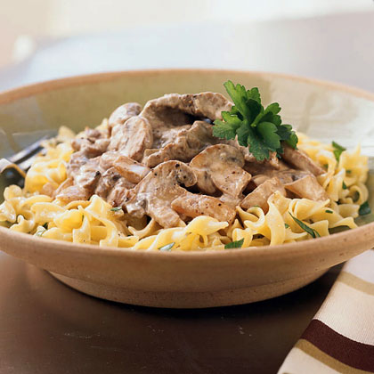

Back
Beef Stroganoff

Description
With its tender chunks of beef coated in a luscious creamy sauce and served over a bed of buttery noodles, it’s no wonder Beef Stroganoff is such a hit. With all that flavor, you might assume it’s a complicated dish, but it’s actually quite the opposite. This from-scratch recipe can be made in well under an hour and with only 20 minutes of hands-on time, since it’s really all about the simmer. (The key to transforming the beef into succulent morsels of mouthwatering meat.) So when you want to impress the family but don’t have all day to do it—this one’s a guaranteed hit!
Ingredients
- 1 1/2 pounds beef sirloin steak, 1/2 inch thick
- 8 ounces fresh mushrooms, sliced (2 1/2 cups)
- 2 medium onions
- 1/4 cup butter
- 3 cups cooked egg noodles
- 1 garlic clove
- 1/4 c butter
- 1 1/2 c beef flavored broth
- 1 tsp Worcestershire sauce
- 1/4 c all-purpose flour
- 1 1/2 c sour cream
Steps
- Cut beef across grain into about 1 1/2x1/2-inch strips.
- Cook mushrooms, onions and garlic in butter in 10-inch skillet over medium heat, stirring occasionally, until onions are tender; remove from skillet.
- Cook beef in same skillet until brown. Stir in 1 cup of the broth, the salt and Worcestershire sauce. Heat to boiling; reduce heat. Cover and simmer 15 minutes.
- Stir remaining 1/2 cup broth into flour; stir into beef mixture. Add onion mixture; heat to boiling, stirring constantly. Boil and stir 1 minute. Stir in sour cream; heat until hot (do not boil). Serve over noodles.